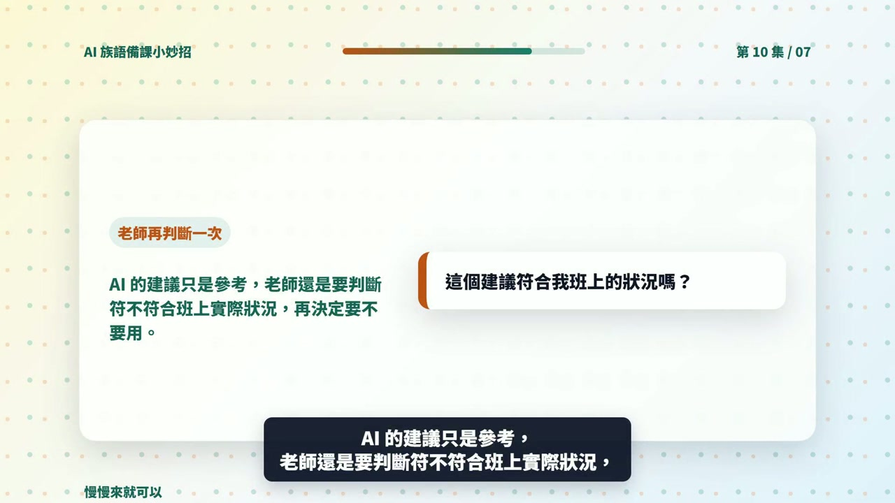

EP010 講義：請 ChatGPT 幫忙看學生的作答，給回饋建議
<!-- handout-screenshot:auto -->
講義截圖

圖說：EP010 本集操作畫面截圖，協助老師對照影片步驟與講義內容。
<!-- /handout-screenshot:auto -->
今天只做一件事
把學生的回答去掉姓名與身分資料，再請 ChatGPT 找出常見誤解，提供下一堂課可以怎麼教的建議。
ChatGPT 在這裡是協助老師整理線索，不是替學生打成績。是否正確、要不要調整教法，最後都由老師判斷。
需要準備
開始前，先準備：
- 原本問學生的題目：例如「請說出今天學到的三個文化重點」。
- 教學時使用的正確內容：用來核對 ChatGPT 的判斷。
- 幾則去掉身分的回答：只留下答案，不要有姓名、學號、照片、聲音或聯絡方式。
- 班級大致程度：例如族語初學者。
可以把學生改稱「第 1 位、第 2 位、第 3 位」，不要用姓名縮寫，也不要描述到足以猜出是哪一位學生。
步驟 1：先整理成匿名內容
原本資料如果是：
王小明：記得依山而居和男女分工，忘記 Gaya。
請改成：
第 1 位：記得依山而居和男女分工，沒有提到 Gaya。
貼上 ChatGPT 前，再檢查一次：
- 已刪除姓名、學號與班級座號。
- 已刪除電話、電子郵件、住址與社群帳號。
- 沒有學生照片、聲音或家庭資料。
- 沒有需要特別保密的學習、健康或家庭狀況。
如果無法確定資料是否安全，就不要貼，改用自己整理的共同現象。
步驟 2：打開新的 ChatGPT 對話
- 打開 ChatGPT。
- 建議開啟新的對話，避免前一段對話中的資料影響分析。
- 點一下畫面下方的輸入框。
步驟 3：輸入本集任務
本集請使用虛構的示範回答。以下這段可以直接複製：
我問學生「請說出太魯閣族文化的三個課堂重點」。以下回答已去掉姓名與身分資料：
第 1 位說依山而居和男女分工，沒有提到 Gaya
第 2 位把課堂上介紹的男女分工內容說反了
第 3 位三個重點都答對
請只根據以上內容，整理學生已經理解的地方、可能的共同誤解，以及下一堂課可以採用的 3 個簡單教學方法。不要替學生評分，不要猜測個別學生的能力，也不要增加我沒有提供的族語或文化知識。請把「觀察到的現象」和「教學建議」分開列出。
實際使用時，請把題目與匿名回答換成自己班上的內容。
步驟 4：送出並看兩個部分
- 確認內容完全沒有學生身分資料。
- 點送出按鈕。
- 回答出現後，先找「觀察到的現象」。
- 再看「教學建議」。
不要急著照做。先對照自己上課時看到的狀況，確認 ChatGPT 有沒有把一個人的回答誤認成全班共同問題。
步驟 5：請它把建議變得更能執行
如果建議太空泛，可以直接複製：
請把第 1 個教學建議改成老師明天能在 10 分鐘內完成的活動。請寫出老師先做什麼、學生接著做什麼、最後怎麼確認學生有沒有理解。不要加入新的族語或文化內容。
如果它開始替學生評分，可以直接複製：
請刪除分數、等第與個別學生評價，只保留全班可以再加強的內容和教學建議。
AI 回覆檢查點
可以參考的回答，應該符合下面幾點：
- 清楚分開「從回答中看到什麼」與「老師可以怎麼做」。
- 沒有替學生打分數、貼標籤或判定能力。
- 沒有把單一學生的狀況說成全班都一樣。
- 建議具體，老師看得出下一堂課怎麼做。
- 沒有捏造學生沒說過的內容。
- 沒有增加未經正式來源核對的族語詞彙或文化說法。
如果 ChatGPT 的分析和老師親眼看到的情況不同，以老師的課堂觀察為準。
隱私、族語與文化安全提醒
- 真實學生資料能不貼就不貼，優先使用老師整理後的共同現象。
- 即使刪掉姓名，只要其他描述能讓人猜出身分，也不算安全。
- 不要上傳整份成績表、點名表、學生作品照片或含有個人資料的檔案。
- ChatGPT 不知道每個方言別、部落與家庭的實際脈絡，族語和文化判斷要由老師或可信任的文化知識持有人確認。
- AI 只能提供建議，不能代替老師做評分、輔導或影響學生權益的決定。
今天完成了什麼
你已經把匿名作答整理成教學線索，並取得下一堂課可以嘗試的調整方法。
下一步
挑一個最符合班上狀況、也最容易執行的建議，放進下一堂課。下一集會進一步請 ChatGPT 依班級人數、組數與主題，設計一個每位學生都有事情可做的分組活動。